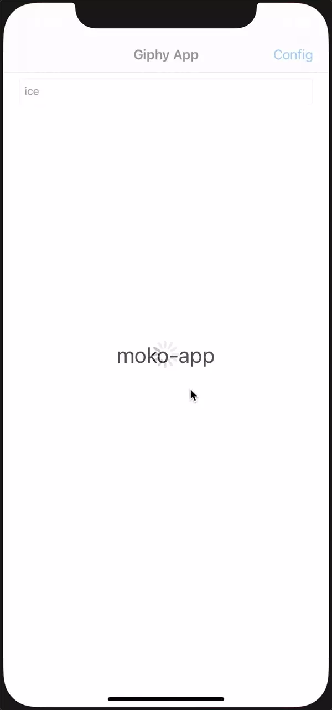

В этом руководстве будет описано создание небольшого приложения под Android и iOS с технологией Kotlin Multiplatform основываясь на шаблоне moko-template.
Инструменты
Для работы потребуется:
- Android Studio 3.4.0+ (не 3.5.1 так как там баг, ломающий mpp);
- Xcode 10.3+;
- Xcode Command Line Tools (
xcode-select --install); - CocoaPods (
sudo gem install cocoapods); - JDK - требуется для запуска
gradleизXcode build phase.
Финальный результат
В результате выполнения всех руководств серии GiphyApp будет получено приложение просмотра гифок с использованием GIPHY API. Интерфейс приложения будет полностью нативный, проигрывание Gif будет сделано нативными библиотеками glide для Android и SwiftyGif для iOS.
|  |

Готовый код проекта доступен на github.
Для создания проекта будет использован шаблон moko-template.
Use this template
Чтобы использовать шаблон нужно перейти на GitHub репозиторий шаблона moko-template и нажать зеленую кнопку Use this template. Этим действием мы создадим новый репозиторий с контентом, соответствующим последнему коммиту из master ветки moko-template.
После успешного создания нового репозитория склонируем репозиторий себе - git clone <git url of repo>.
Чтобы убедиться, что стартовое состояние корректно работает - запустим оба приложения. Для этого нужно:
- Android - открываем через Android Studio корневую директорию репозитория, после завершения
Gradle Syncможно запустить модульandroid-appкак обычное приложение; - iOS - устанавливаем CocoaPods проекта - в директории
ios-appзапускаемpod install, а после завершения открываемios-app/ios-app.xcworkspaceи жмемRunдля запуска приложения.
Настройки индентификации приложения вносятся полностью так же, как и в обычных Android и iOS приложениях.
Изменение Appliсation Id
Android - в файле android-app/build.gradle.kts изменить:
android {
...
defaultConfig {
...
applicationId = "dev.icerock.codelab.giphy"
...
}
}
iOS - в Xcode в настройках проекта указать Bundle Identifier как на скриншоте:
Изменение имени приложения
Android - в файле android-app/src/main/res/values/strings.xml изменить:
<resources>
<string name="app_name">Giphy App</string>
...
</resources>
iOS - в Xcode в настройках проекта указать Display name как на скриншоте:
Изменение иконки
Ресурсы иконки можно скачать по ссылке.
Для замены Android иконок нужно перенести содержимое из директории android архива в android-app/src/main/res. После этого нужно указать иконку в android-app/src/main/AndroidManifest.xml:
<manifest>
<application
...
android:icon="@mipmap/ic_launcher">
...
</application>
</manifest>
Для замены на iOS требуется заменить директорию ios-app/src/Assets.xcassets/AppIcon.appiconset на версию из архива.
Изменение загрузочного экрана
Загрузочный экран есть на iOS и меняется он через Xcode в файле ios-app/src/Resources/LaunchScreen.storyboard. Для примера просто заменим текст, как на скриншоте:
В следующем руководстве GiphyApp #2 разобрана реализация списка Gif.